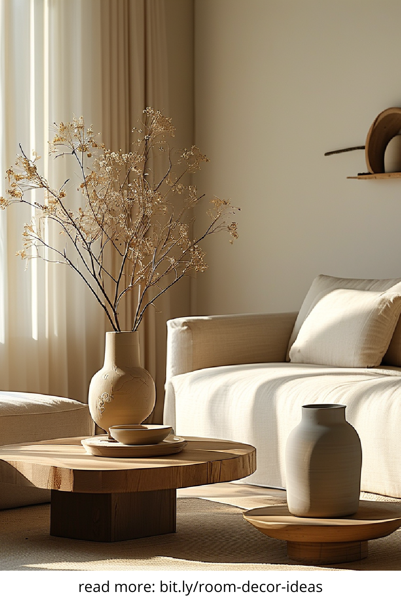
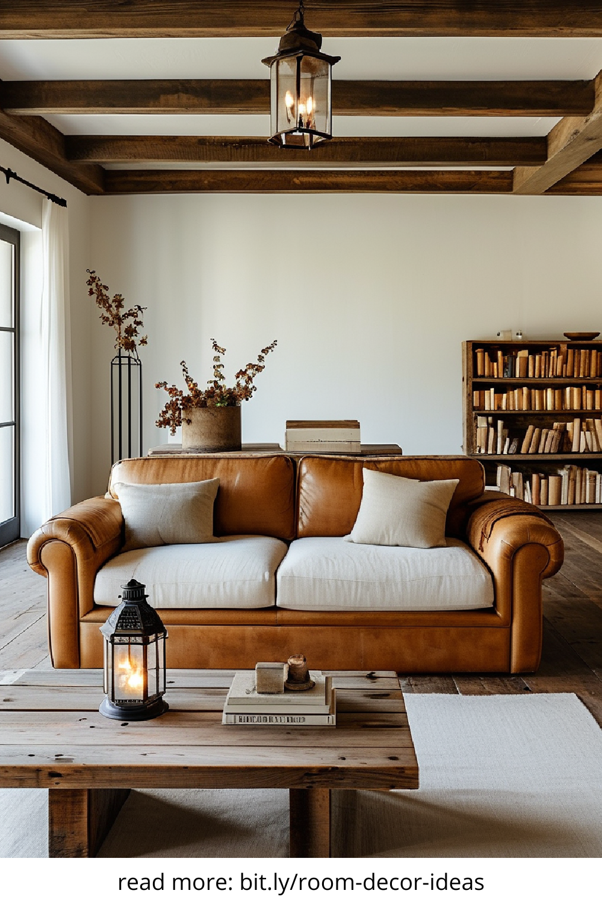
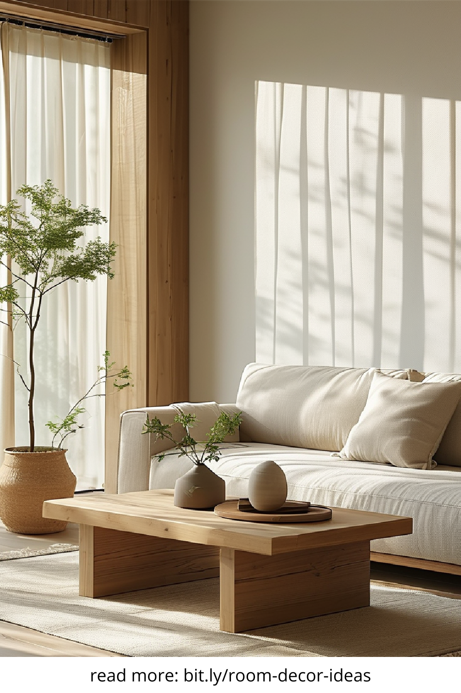
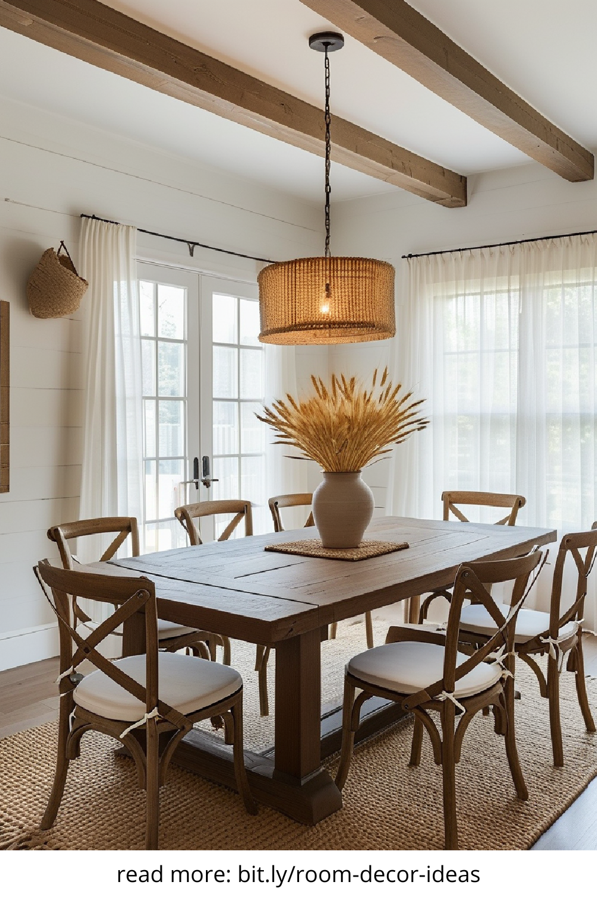

Warm and minimalist home decor blends simplicity with coziness, creating a space that feels both inviting and uncluttered. This style embraces neutral color palettes, natural materials, and functional design elements to maintain a harmonious atmosphere.
A warm minimalist home thrives on a soothing color palette. Soft neutrals like beige, cream, and warm gray serve as a foundation, while subtle earthy tones like terracotta, mustard, and olive green add depth. These colors evoke a sense of comfort without overwhelming the space.
Minimalist decor does not mean sacrificing comfort or style. Opt for furniture with clean lines, simple silhouettes, and natural materials like wood, linen, or leather. Multi-functional pieces, such as storage ottomans or extendable dining tables, help maximize space while maintaining an uncluttered look.
Bringing nature indoors is essential in warm minimalist decor. Wood, stone, and woven materials add texture and warmth. Houseplants not only enhance the aesthetic but also improve air quality, making the home feel fresh and vibrant.
Soft, diffused lighting enhances the warmth of a minimalist space. Choose warm-toned LED lights, stylish floor lamps, or pendant lights with natural textures. Candles and lanterns create a calming atmosphere, perfect for relaxation.
A key principle of minimalist decor is maintaining a clutter-free environment. Storage solutions such as floating shelves, built-in cabinets, and decorative baskets help keep belongings organized while maintaining visual appeal. Every item should have a purpose and place.
While minimalism promotes simplicity, personal touches make a home feel unique. Select a few meaningful decor items, such as handmade ceramics, framed artwork, or cozy textiles. A carefully curated space ensures a balance between warmth and minimalism.
Warm and minimalist home decor remains a timeless trend due to its adaptability and soothing qualities. By embracing simplicity, natural elements, and functional design, anyone can create a home that feels both stylish and comforting.
   